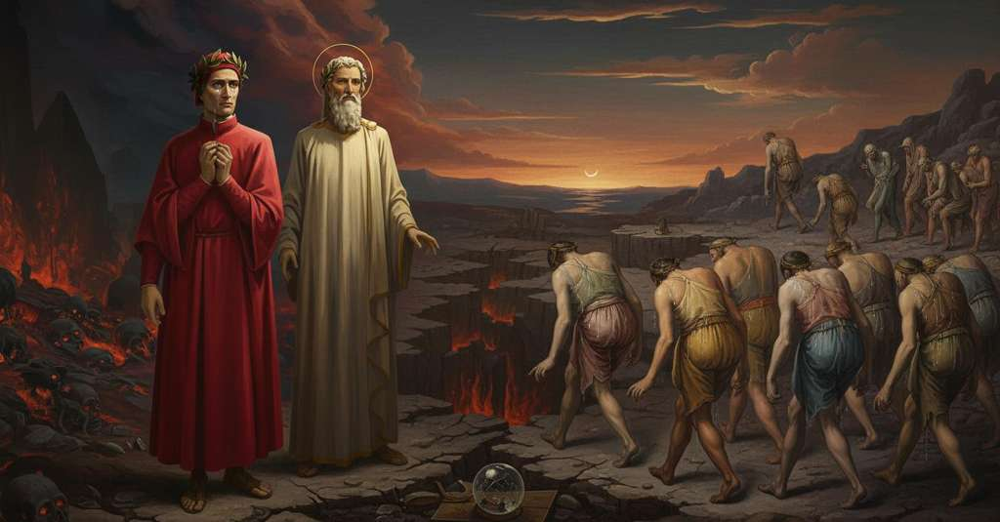

Inferno — Canto 20

After rebuking Dante's pity for the diviners whose heads are twisted backward, Virgil identifies famous seers and explains how the prophetess Manto gave her name to his native city, Mantua. ウェルギリウスは、頭を後ろ向きにされた占い師たちに同情するダンテを戒め、巫女マントにまつわる故郷マントヴァの真の起源を語る。
1
Di nova pena mi conven far versi
Of a new punishment I must make verses
新たな罰について詩句をなさねばならぬ、
2
e dar matera al ventesimo canto
and give matter to the twentieth canto
そして、沈められし者たちについての第一の歌の、
3
de la prima canzon, ch’è d’i sommersi.
of the first canticle, which is of the submerged.
第二十歌に題材を与えるのだ。
4
Io era già disposto tutto quanto
I was already completely disposed
私はすでにすっかり身構えていた、
5
a riguardar ne lo scoperto fondo,
to look into the uncovered depth,
開かれた谷底を覗き込もうと、
6
che si bagnava d’angoscioso pianto;
which was bathed in anguished weeping;
そこは苦悶の涙に濡れていた。
7
e vidi gente per lo vallon tondo
and I saw people through the round valley
そして私は円い谷間に人々が来るのを見た、
8
venir, tacendo e lagrimando, al passo
coming, silent and weeping, at the pace
黙して涙し、この世の
9
che fanno le letane in questo mondo.
that litanies make in this world.
連禱の行列がする歩調で。
10
Come ’l viso mi scese in lor più basso,
As my gaze descended lower on them,
私の視線が彼らのさらに下へと降りると、
11
mirabilmente apparve esser travolto
marvelously appeared to be twisted
驚くべきことに、各人の顎と胸の始まりとの間で、
12
ciascun tra ’l mento e ’l principio del casso,
each one between the chin and the start of the chest,
体がねじ曲げられているのが見えた。
13
ché da le reni era tornato ’l volto,
for the face was turned toward the loins,
なぜなら顔は背の方へと向き直り、
14
e in dietro venir li convenia,
and backward they had to come,
彼らは後ろ向きに進まねばならなかったのだ、
15
perché ’l veder dinanzi era lor tolto.
because seeing forward was taken from them.
前方を見ることは彼らから奪われていたので。
16
Forse per forza già di parlasia
Perhaps by force of paralysis before now
おそらくは麻痺の力によって、かつて
17
si travolse così alcun del tutto;
someone has been so completely twisted;
誰かが完全にこのようにねじれたこともあろう。
18
ma io nol vidi, né credo che sia.
but I have not seen it, nor do I believe it to be so.
だが私はそれを見たこともなく、あるとも信じない。
19
Se Dio ti lasci, lettor, prender frutto
If God let you, reader, take fruit
神が汝、読者よ、その読み物から
20
di tua lezione, or pensa per te stesso
from your reading, now think for yourself
実りを得させてくださるなら、さあ自ら考えてみよ、
21
com’ io potea tener lo viso asciutto,
how I could keep my face dry,
私がいかにして涙をこらえられたかを、
22
quando la nostra imagine di presso
when I saw our image up close
我々の姿かたちが間近で
23
vidi sì torta, che ’l pianto de li occhi
so twisted, that the weeping from the eyes
あれほどねじれているのを見た時に。その目の涙が
24
le natiche bagnava per lo fesso.
bathed the buttocks through the cleft.
尻の割れ目を伝って濡らしていたのだ。
25
Certo io piangea, poggiato a un de’ rocchi
I surely wept, leaning on one of the rocks
確かに私は泣いた、硬い岩の
26
del duro scoglio, sì che la mia scorta
of the hard cliff, so that my guide
突起の一つに寄りかかって。すると我が導き手が
27
mi disse: «Ancor se’ tu de li altri sciocchi?
said to me: “Are you still one of the other fools?
私に言った。「お前はまだ他の愚か者たちの一人か？
28
Qui vive la pietà quand’ è ben morta;
Here piety lives when it is well dead;
ここでは憐れみは、それが完全に死んだ時に生きるのだ。
29
chi è più scellerato che colui
who is more wicked than he
神の裁きに情を抱く者より
30
che al giudicio divin passion comporta?
who brings passion to the divine judgment?”
邪悪な者がいるだろうか？
31
Drizza la testa, drizza, e vedi a cui
Lift your head, lift it, and see him for whom
頭を上げよ、上げよ、そして見よ、誰のために
32
s’aperse a li occhi d’i Teban la terra;
the earth opened before the eyes of the Thebans;
テーベ人たちの目の前で大地が開けたかを。
33
per ch’ei gridavan tutti: “Dove rui,
for which they all cried: “Where are you rushing,
それゆえ彼らは皆叫んだのだ、「どこへ落ちる、
34
Anfïarao? perché lasci la guerra?”.
Amphiaraus? Why do you leave the war?”.
アンピアラオスよ？ なぜ戦を捨てるのか？」と。
35
E non restò di ruinare a valle
And he did not stop his plunge down to the valley
そして彼は谷底へと落ちるのを止めず
36
fino a Minòs che ciascheduno afferra.
until he reached Minos who seizes every one.
皆を捕らえるミノスのところまで至ったのだ。
37
Mira c’ha fatto petto de le spalle;
Look how he has made a chest of his shoulders;
見よ、彼は肩を胸にしてしまった。
38
perché volle veder troppo davante,
because he wished to see too far ahead,
なぜなら、あまりに前方を見ようとしたために、
39
di retro guarda e fa retroso calle.
he looks behind and walks a backward path.
後ろを見て、後ろ向きの道を進むのだ。
40
Vedi Tiresia, che mutò sembiante
See Tiresias, who changed his semblance
ティレシアスを見よ、彼は姿を変え
41
quando di maschio femmina divenne,
when from a male a female he became,
男から女になったのだ、
42
cangiandosi le membra tutte quante;
changing all of his limbs completely;
その体のすべてを変えて。
43
e prima, poi, ribatter li convenne
and afterward, he had to strike once more
そしてその後、再び打たねばならなかった
44
li duo serpenti avvolti, con la verga,
the two entwined serpents with his rod,
杖で、絡み合った二匹の蛇を、
45
che rïavesse le maschili penne.
before he could regain his manly plumes.
男の羽を取り戻すために。
46
Aronta è quel ch’al ventre li s’atterga,
Aruns is he whose back is to that one's belly,
アロンタは、その腹に背を向けている者だ、
47
che ne’ monti di Luni, dove ronca
who in the mountains of Luni, where the Carraran
彼はルーニの山々で、そこでは草を刈る
48
lo Carrarese che di sotto alberga,
dwelling below wields his hoe,
下に住むカッラーラ人が、
49
ebbe tra ’ bianchi marmi la spelonca
had his cave among the white marbles
白い大理石の中に洞窟を持っていた
50
per sua dimora; onde a guardar le stelle
for his abode; from which to watch the stars
彼の住処として。そこから星々を
51
e ’l mar non li era la veduta tronca.
and sea his view was not cut off.
そして海を見るに、その眺めは遮られなかった。
52
E quella che ricuopre le mammelle,
And she who covers her breasts, which you cannot see,
そして、その乳房を覆っている女は、
53
che tu non vedi, con le trecce sciolte,
with her unbound tresses,
お前には見えないが、解かれた髪で、
54
e ha di là ogne pilosa pelle,
and has all her hairy skin on that other side,
そして向こう側には毛深い肌がすべてある、
55
Manto fu, che cercò per terre molte;
was Manto, who searched through many lands;
マントであった、彼女は多くの地を巡り、
56
poscia si puose là dove nacqu’ io;
then she settled there where I was born;
その後、私が生まれた地に身を落ち着けた。
57
onde un poco mi piace che m’ascolte.
wherefore it pleases me a little that you listen.
それゆえ、少しばかり私の話を聞いてもらいたい。
58
Poscia che ’l padre suo di vita uscìo
After her father departed from life
父が命を落とし、
59
e venne serva la città di Baco,
and the city of Bacchus became a slave,
バッコスの都が隷属した後、
60
questa gran tempo per lo mondo gio.
she for a long time roamed the world.
彼女は長い間、世をさまよった。
61
Suso in Italia bella giace un laco,
Up in beautiful Italy lies a lake,
美しきイタリアの上に一つの湖があり、
62
a piè de l’Alpe che serra Lamagna
at the foot of the Alp that locks in Germany
ドイツを閉ざすアルプスの麓、
63
sovra Tiralli, c’ha nome Benaco.
above the Tyrol, which is named Benaco.
ティラッリの上に、ベナコという名で。
64
Per mille fonti, credo, e più si bagna
By a thousand springs, I think, and more is bathed,
千、いやそれ以上の泉から水を集める、
65
tra Garda e Val Camonica e Pennino
between Garda and Val Camonica and the Pennine,
ガルダとヴァル・カモニカとペンニーノの間で、
66
de l’acqua che nel detto laco stagna.
the water that stagnates in the said lake.
その湖にたまる水は。
67
Loco è nel mezzo là dove ’l trentino
A place is in the middle there where the Trentine
その真ん中には場所があり、そこではトレンティーノの
68
pastore e quel di Brescia e ’l veronese
shepherd and he of Brescia and the Veronese
司教と、ブレーシャの司教と、ヴェローナの司教が
69
segnar poria, s’e’ fesse quel cammino.
could give his blessing, if he made that journey.
もしその道を通れば、祝福を与えられただろう。
70
Siede Peschiera, bello e forte arnese
Sits Peschiera, a fair and strong fortress
ペスキエーラが座す、美しく強固な要塞が、
71
da fronteggiar Bresciani e Bergamaschi,
to face the Brescians and the Bergamasks,
ブレーシャ人とベルガモ人を迎え撃つために、
72
ove la riva ’ntorno più discese.
where the shore around is lowest.
周りの岸が最も低くなった場所に。
73
Ivi convien che tutto quanto caschi
There it is fitting that everything should fall
そこでは、すべてが流れ落ちねばならない、
74
ciò che ’n grembo a Benaco star non può,
that in the lap of Benaco cannot stay,
ベナコの懐にとどまれぬものは、
75
e fassi fiume giù per verdi paschi.
and it becomes a river down through green pastures.
そして緑の牧草地を下る川となる。
76
Tosto che l’acqua a correr mette co,
As soon as the water sets its head to run,
水が流れ始めるとすぐに、
77
non più Benaco, ma Mencio si chiama
no longer Benaco, but Mincio it is called
もはやベナコではなく、ミンチョと呼ばれる、
78
fino a Governol, dove cade in Po.
as far as Governolo, where it falls into the Po.
ゴヴェルノルまで、そこでポー川に落ちる。
79
Non molto ha corso, ch’el trova una lama,
It has not run far, when it finds a marshland,
さほど行かぬうちに、それは沼地を見つけ、
80
ne la qual si distende e la ’mpaluda;
in which it spreads out and becomes a swamp;
そこに広がり、沼沢地をなす。
81
e suol di state talor essere grama.
and in summer it is wont at times to be unwholesome.
そして夏には、時に不快なものとなる。
82
Quindi passando la vergine cruda
Passing that way the cruel virgin
そこを通り過ぎる時、かの酷薄な乙女は
83
vide terra, nel mezzo del pantano,
saw land, in the middle of the fen,
沼の真ん中に土地を見た、
84
sanza coltura e d’abitanti nuda.
without cultivation and bare of inhabitants.
耕作もされず、住む者もない土地を。
85
Lì, per fuggire ogne consorzio umano,
There, to flee all human company,
そこで、あらゆる人との交わりを避けるため、
86
ristette con suoi servi a far sue arti,
she stayed with her servants to practice her arts,
彼女は僕たちと共に留まり、その術を行い、
87
e visse, e vi lasciò suo corpo vano.
and lived, and there she left her empty body.
生き、そしてそこに空しい亡骸を残した。
88
Li uomini poi che ’ntorno erano sparti
The men then who were scattered round about
その後、周りに散らばっていた人々が
89
s’accolsero a quel loco, ch’era forte
gathered at that place, which was strong
その場所に集まった、そこは強固だった
90
per lo pantan ch’avea da tutte parti.
because of the swamp it had on every side.
四方を囲む沼のおかげで。
91
Fer la città sovra quell’ ossa morte;
They made the city over those dead bones;
その死んだ骨の上に都を築き、
92
e per colei che ’l loco prima elesse,
and for her who first chose the place,
そして最初にその地を選んだ彼女にちなんで、
93
Mantüa l’appellar sanz’ altra sorte.
they named it Mantua, without other augury.
他の占いをすることなく、マントヴァと名付けた。
94
Già fuor le genti sue dentro più spesse,
Its people within were already more numerous,
その民はすでに数を増していた、
95
prima che la mattia da Casalodi
before the folly of Casalodi
カサロディ家の愚かさが
96
da Pinamonte inganno ricevesse.
was deceived by Pinamonte.
ピナモンテに欺かれるよりも前に。
97
Però t’assenno che, se tu mai odi
Therefore I tell you that, if you ever hear
それゆえ、お前に言い聞かせておくが、もしお前がいつか
98
originar la mia terra altrimenti,
my city's origin told otherwise,
我が故郷の起源が違うように語られるのを聞いても、
99
la verità nulla menzogna frodi».
let no falsehood defraud the truth.”
真実がどんな嘘にも騙されぬように」。
100
E io: «Maestro, i tuoi ragionamenti
And I: «Master, your reasonings
そして私は、「師よ、あなたの論理は
101
mi son sì certi e prendon sì mia fede,
are so certain to me and so take my faith,
私にとってかくも確実で、私の信を得ました、
102
che li altri mi sarien carboni spenti.
that others would be to me as spent coals.
他のものは私には消し炭のようなものでしょう。
103
Ma dimmi, de la gente che procede,
But tell me, of the people who proceed,
しかし教えてください、進みゆく人々の中に、
104
se tu ne vedi alcun degno di nota;
if you see any worthy of note;
あなたが注目に値する者を見るならば。
105
ché solo a ciò la mia mente rifiede».
for only to that my mind now turns».
というのも、私の心はただそれに再び打ち込むのです」。
106
Allor mi disse: «Quel che da la gota
Then he said to me: «That one who from his cheek
すると彼は言った。「頬から
107
porge la barba in su le spalle brune,
stretches his beard onto his brown shoulders,
褐色の肩に髭を垂らしている者は、
108
fu—quando Grecia fu di maschi vòta,
was—when Greece was so void of males
――ギリシャから男たちが空になり、
109
sì ch’a pena rimaser per le cune—
that scarce any remained for the cradles—
ゆりかごに辛うじて残るほどになった時――
110
augure, e diede ’l punto con Calcanta
an augur, and with Calchas gave the sign
占い師で、カルカンタと共に合図を与えた
111
in Aulide a tagliar la prima fune.
in Aulis to cut the first cable.
アウリスで最初の綱を断ち切るようにと。
112
Euripilo ebbe nome, e così ’l canta
Eurypylus was his name, and so my high
エウリピュロスと名を言い、そのように歌っている
113
l’alta mia tragedìa in alcun loco:
tragedy sings of him in a certain place:
私の高尚なる悲劇のある箇所で。
114
ben lo sai tu che la sai tutta quanta.
you know this well, who know it all.
そのすべてを知るあなたはよくご存知のはず。
115
Quell’ altro che ne’ fianchi è così poco,
That other one, so lean in the flanks,
その隣の、脇腹がかくも痩せている者は、
116
Michele Scotto fu, che veramente
was Michael Scot, who truly
ミケーレ・スコットであった。彼は実に
117
de le magiche frode seppe ’l gioco.
knew the game of magical deceptions.
魔法の欺瞞の術を知っていた。
118
Vedi Guido Bonatti; vedi Asdente,
See Guido Bonatti; see Asdente,
グイド・ボナッティを見よ。アスデンテを見よ。
119
ch’avere inteso al cuoio e a lo spago
who wishes now he had attended to the leather
彼は革と紐に専念していればと
120
ora vorrebbe, ma tardi si pente.
and the thread, but too late repents.
今は望むが、悔いるには遅すぎる。
121
Vedi le triste che lasciaron l’ago,
See the wretched women who left the needle,
針を捨てた惨めな女たちを見よ、
122
la spuola e ’l fuso, e fecersi ’ndivine;
the shuttle, and the spindle, and made themselves diviners;
杼と紡錘を、そして占い女となった者たちを。
123
fecer malie con erbe e con imago.
they worked spells with herbs and with images.
薬草と人形を使って妖術を行った。
124
Ma vienne omai, ché già tiene ’l confine
But come on now, for Cain with his thorns
しかしもう行こう、なぜならもう境界を
125
d’amendue li emisperi e tocca l’onda
already holds the boundary of both hemispheres
両半球の、そして波に触れている
126
sotto Sobilia Caino e le spine;
and touches the wave below Seville;
セビリアの下で、カインと茨が。
127
e già iernotte fu la luna tonda:
and yesternight the moon was full:
そして昨夜はもう月が満ちていた。
128
ben ten de’ ricordar, ché non ti nocque
you must well remember it, for it did not harm you
よく覚えているはずだ、お前を害さなかったのだから
129
alcuna volta per la selva fonda».
at any time within the deep wood».
あの深い森の中で一度も」。
130
Sì mi parlava, e andavamo introcque.
Thus he spoke to me, and we went on meanwhile.
彼はそう語り、我々はそうしながら進んでいった。